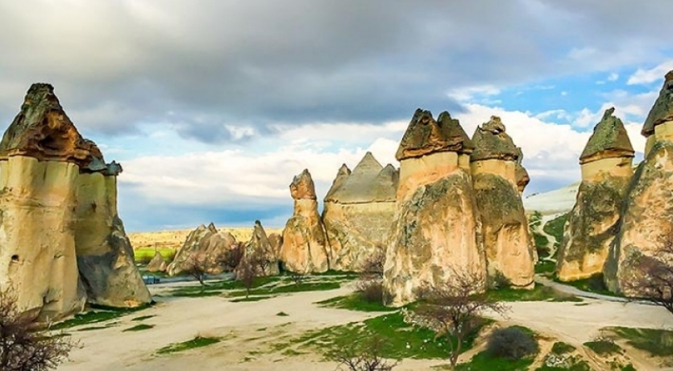
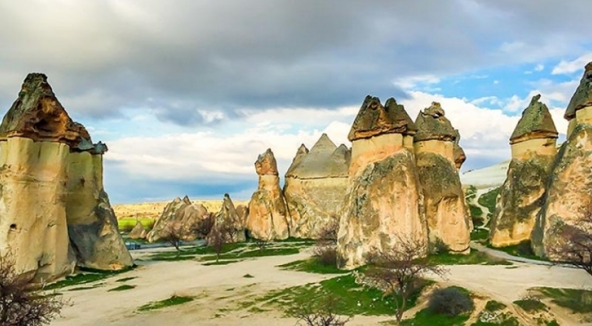
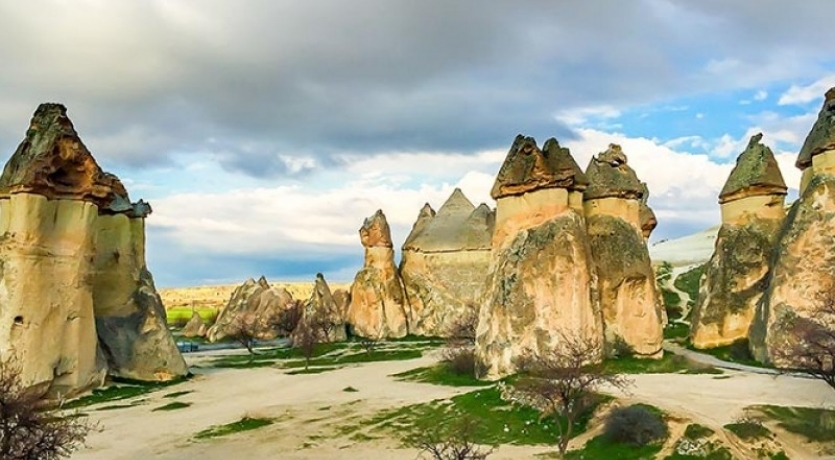

/Pa%C5%9Faba%C4%9Flar%C4%B1%20Kapadokya%204.jpg)
 

Giriş Ücreti: 2025 yılı için 100 TL
Ziyaret Saatleri: 08:00 - 19:00 (yaz), 08:00 - 17:00 (kış)
Adres: Paşabağları, Kapadokya, Nevşehir
Paşabağları, Kapadokya'nın en ünlü çok başlı peri bacalarına ve tarihi yaşam alanlarına ev sahipliği yapar. Vadideki doğal oluşumlar ve eski manastır yapıları ziyaretçilerin ilgisini çeker.
Vadideki kaya oluşumları ve manastır kompleksleri, Bizans döneminden kalmadır. Rahibeler ve keşişler tarafından kullanılmıştır.
